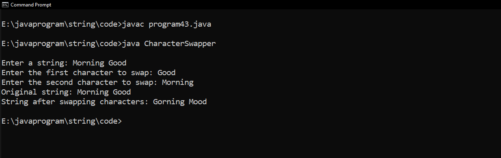
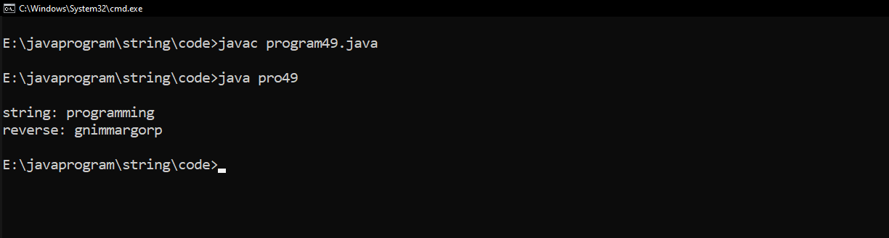

1 :- Program to Check if a String contains only digits?
class string1 {
// Function to check if a string
// contains only digits
public static boolean
onlyDigits(String str, int n)
{
// Traverse the string from
// start to end
for (int i = 0; i < n; i++) {
// Check if character is
// not a digit between 0-9
// then return false
if (str.charAt(i) < '0'
|| str.charAt(i) > '9') {
return false;
}
}
// If we reach here, that means
// all characters were digits.
return true;
}
// Driver Code
public static void main(String args[])
{
// Given string str
String str = "1a234";
int len = str.length();
// Function Call
System.out.println(onlyDigits(str, len));
}
}
Output :-
2 :- Program to perform Deep Copy for String?
class String2
{
// instance variable of the class ABC
int x = 30;
}
class DeepCopyExample
{
// main method
public static void main(String argvs[])
{
// creating an object of the class ABC
String2 obj1 = new String2();
// it will copy the reference, not value
String2 obj2 = new String2();
// updating the value to 6
// using the reference variable obj2
obj2.x = 6;
// printing the value of x using reference variable obj1
System.out.println("The value of x is: " + obj1.x);
}
}
Output :-
3 :- Program to prove String is immutable programmatically?
class ProveStringImmutable
{
public static void referenceCheck(Object x, Object y) {
if (x == y) {
System.out.println("Both pointing to the same reference");
} else {
System.out.println("Both are pointing to different reference");
}
}
public static void main(String[] args) {
String st1 = "Java";
String st2 = "Java";
System.out.println("\nBefore Modification in st1");
referenceCheck(st1, st2);
st1 += "ava";
System.out.println("After Modification");
referenceCheck(st1, st2);
}
}
Output :-
4 :- Program to remove all occurrences of a given character from input String?
import java.util.Scanner;
class RemoveCharacter {
public static void main(String[] args) {
Scanner scanner = new Scanner(System.in);
System.out.print("Enter a string: ");
String inputString = scanner.nextLine();
System.out.print("Enter the character to remove: ");
char charToRemove = scanner.next().charAt(0);
String result = removeCharacter(inputString, charToRemove);
System.out.println("Result: " + result);
scanner.close();
}
public static String removeCharacter(String inputString, char charToRemove) {
StringBuilder stringBuilder = new StringBuilder();
for (int i = 0; i < inputString.length(); i++) {
char currentChar = inputString.charAt(i);
if (currentChar != charToRemove) {
stringBuilder.append(currentChar);
}
}
return stringBuilder.toString();
}
}
Output :-
5 :- Program to append the string using StringBuffer class
class pro5
{
public static void main(String[] args) {
// Create a StringBuilder
StringBuffer s = new StringBuffer("Hello, ");
System.out.println("\nOriginal String : "+s);
// Add characters to the string
s.append("how are you");
// Print the final string
System.out.println("Append a String is : "+s.toString()); // Output: "Hello, World!"
}
}
Output :-
6 :- Program to insert the string using StringBuffer class
//pro:-pro to insert the string using StringBuffer class
class prog6 {
public static void main(String[] args) {
// Create a StringBuffer
StringBuffer stringBuffer = new StringBuffer("Hello, ");
// Print the original StringBuffer
System.out.println("\nOriginal StringBuffer: " + stringBuffer);
// String to insert
String toInsert = "World!";
// Index at which to insert the string
int insertIndex = 7;
// Insert the string into the StringBuffer
stringBuffer.insert(insertIndex, toInsert);
// Print the modified StringBuffer
System.out.println("Modified StringBuffer: " + stringBuffer);
}
}
Output :-
7 :- Program to Add Characters to a String
import java.util.Scanner;
class AddCharacterToString
{
public static void main(String a[])
{
Scanner s=new Scanner(System.in);
System.out.print("\nEnter a String : ");
String str=s.nextLine();
System.out.print("Enter the character : ");
char c=s.next().charAt(0);
String str2=c+str;
System.out.println("\nOriginal String : "+str);
System.out.println("Modified String : "+str2);
}
}
Output :-
8 :- Program to Add Characters to a String
import java.util.Scanner;
class prog8
{
public static void main(String a[])
{
Scanner s=new Scanner(System.in);
System.out.print("\nEnter a String : ");
String str=s.nextLine();
System.out.print("Enter the character : ");
char c=s.next().charAt(0);
String str2=c+str;
System.out.println("\nOriginal String : "+str);
System.out.println("Modified String : "+str2);
}
}
Output :-
9 :- Program to Check Anagram
import java.util.Arrays;
class AnagramChecker {
public static boolean areAnagrams(String str1, String str2) {
str1 = str1.replaceAll("\\s", "").toLowerCase();
str2 = str2.replaceAll("\\s", "").toLowerCase();
if (str1.length() != str2.length()) {
return false;
}
char[] charArray1 = str1.toCharArray();
char[] charArray2 = str2.toCharArray();
Arrays.sort(charArray1);
Arrays.sort(charArray2);
return Arrays.equals(charArray1, charArray2);
}
public static void main(String[] args) {
String str1 = "Listen";
String str2 = "Silent";
System.out.println("\nOrignal String : "+str1);
System.out.println("Orignal String : "+str2);
if (areAnagrams(str1, str2)) {
System.out.println(str1 + " and " + str2 + " are anagrams.");
} else {
System.out.println(str1 + " and " + str2 + " are not anagrams.");
}
}
}
Output :-

10 :- Program to check whether a string is a Palindrome
class PalindromeString10
{
public static void main(String[] args) {
String string = "Kayak";
boolean flag = true;
//Converts the given string into lowercase
string = string.toLowerCase();
//Iterate the string forward and backward, compare one character at a time
//till middle of the string is reached
for(int i = 0; i < string.length()/2; i++){
if(string.charAt(i) != string.charAt(string.length()-i-1)){
flag = false;
break;
}
}
if(flag)
System.out.println(string + "\nGiven string is palindrome");
else
System.out.println(string + "\nGiven string is not a palindrome");
}
}
Output :-
11 :- Program to Convert Enum to String
import java.io.*;
// Enum
enum Fruits {
Orange,
Apple,
Banana,
Mango;
}
// Main class
class GFG {
// Main driver method
public static void main(String[] args) {
// Printing all the values
System.out.println(Fruits.Orange.name());
System.out.println(Fruits.Apple.name());
System.out.println(Fruits.Banana.name());
System.out.println(Fruits.Mango.name());
}
}
Output :-
12 :- Program to Convert String to String Array
import java.util.Scanner;
import java.util.Arrays;
class StringToArray
{
public static void main(String args[])
{
System.out.println("\npro to Convert String To String Array\n");
Scanner sc = new Scanner(System.in);
System.out.print("Enter a String value : ");
String str = sc.nextLine();
String[] StringArray = str.split(",");
for (String s1 : StringArray)
{
System.out.println("Convert string To ArrayString is : "+s1);
}
System.out.println("Convert string To ArrayString is : "+Arrays.toString(StringArray));
}
}
Output :-
13 :- Program to count number of words in a String?
class Count
{
public static void main(String[] args) {
// Example string
String inputString = "This is a sample string";
// Count the number of words
int wordCount = countWords(inputString);
// Print the result
System.out.println("\nOrignal string: " + inputString );
System.out.println("Number of words in the string: " + wordCount);
}
// Function to count words in a string
private static int countWords(String str) {
// Check for null or empty string
if (str == null || str.isEmpty()) {
return 0;
}
// Split the string into an array of words
String[] words = str.split("\\s+");
// Return the number of words
return words.length;
}
}
Output :-
14 :- Program to count the total number of characters in a string
import java.util.Scanner;
class CountCharToString
{
public static void main(String a[])
{
Scanner sc=new Scanner(System.in);
System.out.print("\nEnter a String : ");
String str=sc.nextLine();
int charactercount=str.length();
System.out.println("Total number of character in a string : "+charactercount);
}
}
Output :-
15 :- Program to count the total number of punctuation characters exists in a String
// Program to count the total number of punctuation characters exists in a String
class count
{
public static void main(String args[])
{
int n = 0;
System.out.println("Enter your String ");
String line = new java.util.Scanner(System.in).nextLine();
for (int i = 0; i < line.length(); i++)
{
if (!Character.isLetterOrDigit(line.charAt(i)) && line.charAt(i)!=' ')
n++;
}
System.out.println("number of punctuation characters : "+ n);
}
}
Output :-

16:- Program to count the total number of vowels and consonants in a string
import java.util.Scanner;
class count {
public static void main(String[] a) {
Scanner s = new Scanner(System.in);
System.out.print("\nEnter a string: ");
String input = s.nextLine();
int vowelCount = 0;
int consonantCount = 0;
input = input.toLowerCase();
for (int i = 0; i < input.length(); i++) {
char ch = input.charAt(i);
if (ch >= 'a' && ch <= 'z') {
if (ch == 'a' || ch == 'e' || ch == 'i' || ch == 'o' || ch == 'u') {
vowelCount++;
} else {
consonantCount++;
}
}
}
System.out.println("Total vowels: " + vowelCount);
System.out.println("Total consonants: " + consonantCount);
}
}
Output :-
17:- Program to determine whether a given string is palindrome
// Program to determine whether a given string is palindrome
class palindrome{
public static void main(String st[]){
java.util.Scanner input = new java.util.Scanner(System.in);
System.out.println("Enter your String: ");
StringBuffer str= new StringBuffer( input.nextLine());
StringBuffer st1 = new StringBuffer(str);
str.reverse();
//converting string back to string from string buffer
String s1=st1.toString();
String s2=str.toString();
if(s1.equals(s2))
System.out.println("It is a palindrome String");
else
System.out.println("It is not a palindrome String");
}
}
Output :-
18 :- Program to determine whether one string is a rotation of another
18
// Program to determine whether one string is a rotation of another
import java.util.*;
class rotateString
{
static boolean checkForRotation (String str1, String str2)
{
return (str1.length() == str2.length()) && ((str1 + str1).indexOf(str2) != -1);
}
public static void main (String[] args)
{
Scanner input = new Scanner(System.in);
System.out.println("Enter string 1: ");
String str1 = input.nextLine();
System.out.println("Enter string 2: ");
String str2 = input.nextLine();
System.out.println("The given strings are: "+str1+" and "+str2);
System.out.println("\nThe concatination of 1st string twice is: "+str1+str1);
if (checkForRotation(str1, str2))
{
System.out.println("The 2nd string "+str2+" exists in the new string.");
System.out.println("\nStrings are rotations of each other");
}
else
{
System.out.println("The 2nd string "+str2+" not exists in the new string.");
System.out.printf("\nStrings are not rotations of each other");
}
}
}
Output :-

19 :- Program to divide a string in 'N' equal parts.
// Program to divide a string in 'N' equal parts.
import java.util.*;
class Main {
static void splitString(String str1, int n) {
int str_size = str1.length();
int part_size;
if (str_size % n != 0) {
System.out.println("The size of the given string is not divisible by " + n);
return;
} else {
System.out.println("The given string is: " + str1);
System.out.println("The string divided into " + n + " parts and they are: ");
part_size = str_size / n;
for (int i = 0; i < str_size; i++) {
if (i % part_size == 0) System.out.println();
System.out.print(str1.charAt(i));
}
}
}
public static void main(String[] args) {
Scanner input = new Scanner(System.in);
System.out.println("Enter the String : ");
String str1 = input.nextLine();
System.out.println("Enter the number of parts you wanna do: ");
int split_number = Integer.parseInt(input.nextLine());
splitString(str1, split_number);
}
}
Output :-
20 :- Program to find all subsets of a string
class SubsetToString
{
static void subString(String str, int n)
{
for (int i = 0; i < n; i++) //starting index
{
for (int j = i + 1; j <= n; j++) //ending index
{
System.out.println(str.substring(i, j));
}
}
}
public static void main(String[] args)
{
System.out.println("\npro Find all the Subset of a string.\n");
java.util.Scanner sc = new java.util.Scanner(System.in);
System.out.print("Enter a String : ");
String str = sc.nextLine();
System.out.println("\nOrginal String is : " + str);
System.out.println("subsets of a given string are : ");
SubsetToString s = new SubsetToString();
s.subString(str, str.length());
}
}
Output :-
21 :- Program to find all the permutations of a string
//pro to find all the permutations of a string
class StringPermutations
{
public static void main(String[] args) {
String inputString = "four";
findPermutations(inputString, "");
}
public static void findPermutations(String input, String current) {
int length = input.length();
// If the input string is empty, we've formed a permutation
if (length == 0) {
System.out.println(current);
} else {
for (int i = 0; i < length; i++) {
char currentChar = input.charAt(i);
String remaining = input.substring(0, i) + input.substring(i + 1);
findPermutations(remaining, current + currentChar);
}
}
}
}
Output :-
22 :- Program to find maximum and minimum occurring character in a string
// Program to find maximum occurring character in a string
import java.util.*;
class maxChars {
static final int N = 256;
static char MaxOccuringChar(String str1) {
int ctr[] = new int[N];
int l = str1.length();
for (int i = 0; i < l; i++)
ctr[str1.charAt(i)]++;
int max = -1;
char result = ' ';
for (int i = 0; i < l; i++) {
if (max < ctr[str1.charAt(i)]) {
max = ctr[str1.charAt(i)];
result = str1.charAt(i);
}
}
return result;
}
public static void main(String[] args) {
Scanner input = new Scanner(System.in);
System.out.println("Enter your String: ");
String str1 = input.nextLine();
System.out.println("The given string is: " + str1);
System.out.println("Max occurring character in the given string is: " + MaxOccuringChar(str1));
}
}
Output :-
23 :- Program to find Reverse of the string
class reverse
{
public static void main(String args[])
{
StringBuffer a = new StringBuffer("ABCDE");
System.out.println( "\nOriginal String : "+a);
System.out.println( "The reverse string--"+a.reverse());
}
}
Output :-
24 :- Program to find the duplicate characters in a string
// Program to find the duplicate characters in a string
import java.util.*;
class check_duplicate
{
static int arr[]=new int[26];
static void CountCharacters(String str1)
{
str1=str1.toUpperCase();
System.out.println(str1);
for (int i = 0; i < str1.length(); i++)
{ arr[(str1.charAt(i))-65]++; }
}
static void showDuplicates(String str1)
{
System.out.println("Duplicate Characters: ");
for(int i=0;i< 26;i++)
{
if(arr[i]>1)
System.out.println((char)(i+65)+"-"+arr[i]);
}
}
public static void main(String[] args)
{
String str1 = "RuqayyaParveen";
System.out.println("The given string is: "+str1);
System.out.println("The duplicate characters and counts are: ");
CountCharacters(str1);
showDuplicates(str1);
}
}
Output :-
25 :- Program to find the duplicate words in a string
class DuplicateWord
{
public static void main(String[] args)
{
System.out.println("\npro to find the duplicate words in a string\n");
java.util.Scanner sc = new java.util.Scanner(System.in);
System.out.print("Enter a String : ");
String str = sc.nextLine();
int count;
str = str.toLowerCase();
String words[] = str.split(" ");
System.out.println("\nyour enetred String is : "+str);
System.out.println("Duplicate words in a given string : ");
for(int i = 0; i < words.length; i++)
{
count = 1;
for(int j = i+1; j < words.length; j++)
{
if(words[i].equals(words[j]))
{
count++;
words[j] = "0";
}
}
if(count > 1 && words[i] != "0")
System.out.println(words[i]);
}
}
}
Output :-
26 :- Program to find the frequency of characters
import java.util.Scanner;
class spro4
{
public static void main(String st[])
{
String str="hello world";
int count=0;
System.out.println("\nString is :"+str);
System.out.print("Enter a character to find its frequency: ");
Scanner sc= new Scanner(System.in);
char c = sc.next().charAt(0);
for(int i=0; i< str.length();i++)
{
if(c== str.charAt(i))
{
count++;
}
}
System.out.println("Frequency of "+c+" in the string is: "+ count);
}
}
Output :-
27 :- Program to find the largest and smallest word in a string
import java.util.Scanner;
class WordLength {
public static void main(String[] args) {
Scanner scanner = new Scanner(System.in);
System.out.print("\nEnter a string: ");
String inputString = scanner.nextLine();
String[] words = inputString.split("\\s+");
String smallestWord = words[0];
String largestWord = words[0];
for (int i = 1; i < words.length; i++) {
if (words[i].length() < smallestWord.length()) {
smallestWord = words[i];
}
if (words[i].length() > largestWord.length()) {
largestWord = words[i];
}
}
System.out.println("Smallest word: " + smallestWord);
System.out.println("Largest word: " + largestWord);
scanner.close();
}
}
Output :-
28 :- Program to find the longest repeating sequence in a string
import java.io.BufferedReader;
import java.io.FileReader;
import java.io.IOException;
import java.util.HashMap;
import java.util.Map;
import java.util.Scanner;
class wordfinder {
public static void main(String[] a) {
Scanner s = new Scanner(System.in);
System.out.print("\nEnter the path to the text file: ");
String filePath = s.nextLine();
try {
String mostRepeatedWord = findMostRepeatedWord(filePath);
System.out.println("The most repeated word in the file is: " + mostRepeatedWord);
} catch (IOException e) {
System.out.println("Error reading the file: " + e.getMessage());
}
}
private static String findMostRepeatedWord(String filePath) throws IOException {
BufferedReader reader = new BufferedReader(new FileReader(filePath));
String line;
Map wordCountMap = new HashMap();
while ((line = reader.readLine()) != null) {
String[] words = line.split("\\s+");
for (String word : words) {
word = word.replaceAll("[^a-zA-Z]", "").toLowerCase();
if (wordCountMap.containsKey(word)) {
wordCountMap.put(word, wordCountMap.get(word) + 1);
} else {
wordCountMap.put(word, 1);
}
}
}
reader.close();
String mostRepeatedWord = null;
int maxCount = 0;
for (Map.Entry entry : wordCountMap.entrySet()) {
if (entry.getValue() > maxCount) {
mostRepeatedWord = entry.getKey();
maxCount = entry.getValue();
}
}
return mostRepeatedWord;
}
}
Output :-
29 :- Program to find the most repeated word in a text file
.
import java.io.BufferedReader;
import java.io.FileReader;
import java.io.IOException;
import java.util.HashMap;
import java.util.Map;
import java.util.Scanner;
class wordfinder {
public static void main(String[] a) {
Scanner s = new Scanner(System.in);
System.out.print("\nEnter the path to the text file: ");
String filePath = s.nextLine();
try {
String mostRepeatedWord = findMostRepeatedWord(filePath);
System.out.println("The most repeated word in the file is: " + mostRepeatedWord);
} catch (IOException e) {
System.out.println("Error reading the file: " + e.getMessage());
}
}
private static String findMostRepeatedWord(String filePath) throws IOException {
BufferedReader reader = new BufferedReader(new FileReader(filePath));
String line;
Map wordCountMap = new HashMap();
while ((line = reader.readLine()) != null) {
String[] words = line.split("\\s+");
for (String word : words) {
word = word.replaceAll("[^a-zA-Z]", "").toLowerCase();
if (wordCountMap.containsKey(word)) {
wordCountMap.put(word, wordCountMap.get(word) + 1);
} else {
wordCountMap.put(word, 1);
}
}
}
reader.close();
String mostRepeatedWord = null;
int maxCount = 0;
for (Map.Entry entry : wordCountMap.entrySet()) {
if (entry.getValue() > maxCount) {
mostRepeatedWord = entry.getKey();
maxCount = entry.getValue();
}
}
return mostRepeatedWord;
}
}
Output :-

30 :- Program to find the number of the words in the given text file
class spro3
{
public static void main(String st[])
{
String str= new String( "Java is platform independent. ");
int c=0;
System.out.println("\nString is : "+str);
int n= str.length();
for(int i=0; i< n;i++)
{
char s= str.charAt(i);
if(s==' ')
{
c++;
}
}
System.out.println("No. of words in String : "+ (c));
}
}
Output :-
31 :- Program to Get a Character From the Given String
class character {
public static char
getCharFromString(String str, int index)
{
return str.charAt(index);
}
public static void main(String[] args)
{
String str = "ABCDEFGH";
int index = 5;
char ch = getCharFromString(str, index);
System.out.println("\nCharacter from " + str
+ " at index " + index
+ " is " + ch);
}
}
Output :-
32 :- Program to Insert a string into another string
import java.util.Scanner;
class String32
{
public static void main(String[] args) {
Scanner scanner = new Scanner(System.in);
// Get the main string from the user
System.out.print("\nEnter the main string: ");
String mainString = scanner.nextLine();
// Get the string to be inserted
System.out.print("Enter the string to insert: ");
String insertString = scanner.nextLine();
// Get the index at which to insert the string
System.out.print("Enter the index to insert the string: ");
int index = scanner.nextInt();
// Check if the index is within the valid range
if (index >= 0 && index <= mainString.length()) {
// Insert the string and display the result
String resultString = insertStringIntoMainString(mainString, insertString, index);
System.out.println("Result: " + resultString);
} else {
System.out.println("Invalid index. Please enter a valid index.");
}
scanner.close();
}
private static String insertStringIntoMainString(String mainString, String insertString, int index) {
// Concatenate the substrings before and after the insertion point
return mainString.substring(0, index) + insertString + mainString.substring(index);
}
}
Output :-
33 :- Program to Iterate Over Characters in String
// Program to Iterate Over Characters in String
import java.io.*;
import java.util.*;
class Strings_33 {
static void traverseString(String str)
{
for (int i = 0; i < str.length(); i++) {
System.out.print(str.charAt(i) + " ");
}
}
// Method 2
// Main driver method
public static void main(String[] args)
{
// Custom input string
String str = "Hello world";
// Calling the Method 1
traverseString(str);
}
}
Output :-
34 :- Program to Print a New Line in String
class EvenLength
{
public static void main(String str[] )
{
String s = "This is the java even length word pro ";
String[] words = s.split(" ");
for(String word : words) {
if(word.length() % 2 == 0) {
System.out.println(word);
}
}
}
}
Output :-
35 :- Program to Print even length words
import java.util.Scanner;
class RemoveWhiteSpace
{
public static void main(String args[])
{
System.out.println("\npro to remove all the white spaces from a string.\n");
Scanner sc= new Scanner(System.in);
System.out.print("Enter a String value : ");
String str1= sc.nextLine();
String result = str1.replaceAll("\\s+","");
System.out.println("\nOriginal String : "+str1);
System.out.println("Remove a all the WhiteSpace : "+result);
}
}
Output :-

36 :- Program to print smallest and biggest possible palindrome word in a given string
// Program to print smallest and biggest possible palindrome word in a given string
class Strings_36 {
// Function to check if a
// word is palindrome
public static boolean checkPalin
(
String word)
{
int n = word.length();
// making the check case
// case insensitive
word = word.toLowerCase();
// loop to check palindrome
for (int i = 0; i < n; i++, n--)
{
if (word.charAt(i) != word.charAt(n - 1))
return false;
}
return true;
}
// Determine the smallest and biggest
// palindromes in a given string
public static void lengthPalindrome(int temp, String words[])
{
int count = 0;
String smallest = "", longest = "";
for (int i = 0; i < temp; i++) {
if (checkPalin(words[i])) {
count++;
// Initialize smallest and longest
// when first palindromic word
// is found
if (count == 1)
smallest = longest = words[i];
// Compare smallest and longest with each
// palindromic words
else {
// If length of smallest is greater
// than next palindromic word then
// Store that word in smallest
if (smallest.length()
> words[i].length())
smallest = words[i];
// If length of longest is less
// than next palindromic word then
// Store that word in longest
if (longest.length()
< words[i].length())
longest = words[i];
}
}
}
if (count == 0)
System.out.println("No palindrome found");
else {
System.out.println("Smallest palindrome: "
+ smallest);
System.out.println("Biggest palindrome: "
+ longest);
}
}
public static void main(String[] args)
{
String string = "Wow Madam is driving racecar";
String word = "";
String[] words = new String[100];
int temp = 0;
// Add extra space after string
// to get the last word
string = string + " ";
for (int i = 0; i < string.length(); i++) {
// Split the string into words
if (string.charAt(i) != ' ') {
word = word + string.charAt(i);
}
else {
// Add word to array words
words[temp] = word;
temp++;
word = "";
}
}
System.out.println("Inputted String : " + string);
lengthPalindrome(temp, words);
}
}
Output :-

37 :- Program to remove all the white spaces from a string
import java.util.Scanner;
class RemoveWhiteSpace
{
public static void main(String args[])
{
System.out.println("\npro to remove all the white spaces from a string.\n");
Scanner sc= new Scanner(System.in);
System.out.print("Enter a String value : ");
String str1= sc.nextLine();
String result = str1.replaceAll("\\s+","");
System.out.println("\nOriginal String : "+str1);
System.out.println("Remove a all the WhiteSpace : "+result);
}
}
Output :-
38 :- Program to replace lower-case characters with upper-case and vice-versa
// Program to replace lower-case characters with upper-case and vice-versa
import java.util.Scanner;
class stringvv {
public static void main(String[] args) {
Scanner scanner = new Scanner(System.in);
System.out.print("Enter a string: ");
String input = scanner.nextLine();
String output = "";
for (int i = 0; i < input.length(); i++) {
char c = input.charAt(i);
if (Character.isLowerCase(c)) {
output += Character.toUpperCase(c);
} else if (Character.isUpperCase(c)) {
output += Character.toLowerCase(c);
} else {
output += c;
}
}
System.out.println("Output: " + output);
}
}
Output :-

39 :- Program to replace the spaces of a string with a specific characterh3>
class ReplaceSpace
{
public static void main(String str[] ) {
String s = "This is replace the space pro";
char ch = '-';
s = s.replace(' ', ch);
System.out.println("\nString after replacing spaces with given character: ");
System.out.println(s);
}
}
Output :-
40 :- Program to separate the Individual Characters from a String
class SeparateCharacters
{
public static void main(String[] args) {
String inputString = "Hello, World!";
// Using a for loop to separate and print individual characters
for (int i = 0; i < inputString.length(); i++) {
char character = inputString.charAt(i);
System.out.println(character);
}
}
}
Output :-
41 :- Program to Splitting into a number of sub-strings
class String41
{
public static void main(String[] args)
{
String originalString = "hello world";
int substringLength = 3;
int numSubstrings = (int) Math.ceil((double) originalString.length() / substringLength);
for (int i = 0; i < numSubstrings; i++) {
int start = i * substringLength;
int end = Math.min((i + 1) * substringLength, originalString.length());
String substring = originalString.substring(start, end);
System.out.println("Substring " + (i + 1) + ": " + substring);
}
}
}
Output :-
42 :- Program to swap two string variables without using third or temp variable.
import java.lang.*;
class B {
public static void main(String[] args) {
String x = "hello", y = "world";
System.out.println("\nBefore swapping: " + x + " " + y);
x = x + y;
y = x.substring(0, (x.length() - y.length()));
x = x.substring(y.length());
System.out.println("After swapping: " + x + " " + y);
}
}
Output :-
43 :- Program to Swapping Pair of Characters
import java.util.Scanner;
class CharacterSwapper {
public static void main(String[] args) {
Scanner scanner = new Scanner(System.in);
System.out.print("\nEnter a string: ");
String userString = scanner.nextLine();
System.out.print("Enter the first character to swap: ");
char charToSwap1 = scanner.next().charAt(0);
System.out.print("Enter the second character to swap: ");
char charToSwap2 = scanner.next().charAt(0);
if (userString.contains(String.valueOf(charToSwap1)) && userString.contains(String.valueOf(charToSwap2))) {
String resultString = swapCharacters(userString, charToSwap1, charToSwap2);
System.out.println("Original string: " + userString);
System.out.println("String after swapping characters: " + resultString);
} else {
System.out.println("Error: At least one of the characters is not present in the input string.");
}
}
private static String swapCharacters(String inputString, char char1, char char2) {
StringBuilder swappedString = new StringBuilder();
for (char ch : inputString.toCharArray()) {
if (ch == char1) {
swappedString.append(char2);
} else if (ch == char2) {
swappedString.append(char1);
} else {
swappedString.append(ch);
}
}
return swappedString.toString();
}
}
Output :-

44 :- Read two String user input and check if first contains second?
import java.util.*;
class string
{
public static boolean is_str_contains(String str1, String str2) {
if (str1 == null || str2 == null) {
throw new IllegalArgumentException("You can't pass null strings as input.");
}
boolean ans = false;
for (int i = 0; i < str2.length() - 1; i++) {
if (str2.charAt(i) == str1.charAt(0)) {
for (int j = 0; j < str1.length(); j++) {
if ((i + j) < str2.length() && str1.charAt(j) == str2.charAt(i + j) && j == str1.length() - 1) {
ans = true;
break;
}
}
}
}
return ans;
}
public static void main(String[] args) {
Scanner scanner = new Scanner(System.in);
System.out.print("\nInput first string: ");
String str1 = scanner.nextLine();
System.out.print("Input second string: ");
String str2 = scanner.nextLine();
System.out.println("If the second string contains the first one? "+is_str_contains(str1, str2));
}
}
Output :-
45 :- Reserve String without reverse() function
class spro2
{
public static void main(String arr[])
{
String s= "hello world";
System.out.println("\nString: "+s);
int x= s.length();
while(x>0)
{
System.out.print(s.charAt(x-1));
x--;
}
}
}
Output :-
46 :- Reverse String Word by Word
import java.util.Scanner;
class ReverseString
{
public static void main(String str[] )
{
String s;
System.out.print("\nEnter a string: ");
Scanner scanner = new Scanner(System.in);
s = scanner.nextLine();
scanner.close();
String reversed = reverseString(s);
System.out.println("The reversed string is: " + reversed);
}
public static String reverseString(String s)
{
if (s.isEmpty())
return s;
return reverseString(s.substring(1)) + s.charAt(0);
}
}
Output :-
47 :- Write a program to check if two Strings are created with same characters?
class pro47
{
static String getString(char x) {
String s = String.valueOf(x);
return s;
}
static boolean solve(String s1, String s2)
{
String a = getString(s1.charAt(0)),
b = getString(s2.charAt(0));
for (int i = 1; i < s1.length(); i++)
if (s1.charAt(i) != s1.charAt(i - 1))
{
a += getString(s1.charAt(i));
}
for (int i = 1; i < s2.length(); i++)
if (s2.charAt(i) != s2.charAt(i - 1))
{
b += getString(s2.charAt(i));
}
if (a.equals(b))
return true;
return false;
}
public static void main(String[] args)
{
String s1 = "RADHE", s2 = "RADHE";
if (solve(s1, s2))
System.out.print("\nThik ha, chal rha hai");
else
System.out.print("Thik nhi hai");
}
}
Output :-
48 :- Write a program to find out first non repeated character from input String?
// Write a program to find out first non repeated character from input String?
class check {
public static void main(String[] args) {
String str = "HelloWorld";
char c = getChar(str);
if(c != 0){
System.out.println("The first non repeated character is " + c);
}else{
System.out.println("No unique character found");
}
}
private static char getChar(String str) {
for (int i = 0; i < str.length(); i++) {
char c = str.charAt(i);
if (str.indexOf(c) == str.lastIndexOf(c)) {
return c;
}
}
return 0;
}
}
Output :-
49 :- Create an object StringBuffer class to reverse the string.
class pro49
{
public static void main(String[] args) {
StringBuffer sb = new StringBuffer("proming");
System.out.println("\nstring: " + sb);
System.out.println("reverse: " + sb.reverse());
}
}
Output :-

50 :- Create an object StringBuffer class to show functionality of insert, append, delete and replace functions.
/*
50. Create an object StringBuffer class to show functionality of insert, append, delete and replace functions.
*/
class Test
{
public static void main(String args[])
{
StringBuffer string_buffer = new StringBuffer("write");
/* [ insert ] */
// System.out.println(new StringBuffer(" if just use ").toString());
string_buffer.insert(5,"\n inbuild function insert() ");
/* [ append ] */
string_buffer.append("\n If you are like
// System.out.println(string_buffer.toString());
/* [ replace ] */
string_buffer.replace(0,5,"wrong");
/* [ delete ] */
string_buffer.delete(5,20);
/* [ display ] */
System.out.println(string_buffer);
}
}
Output :-